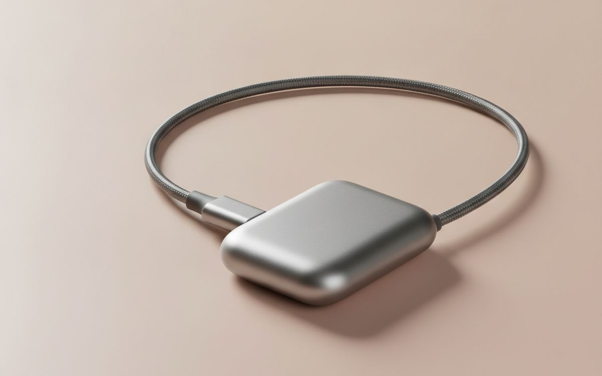
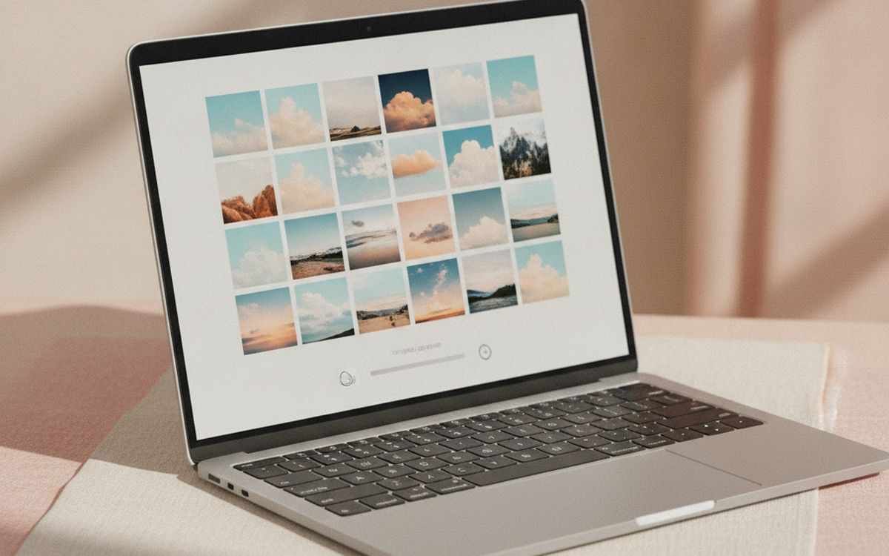
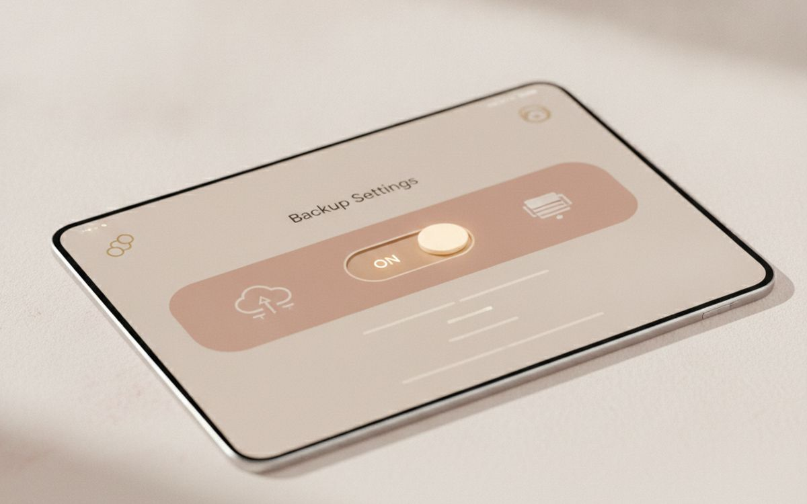
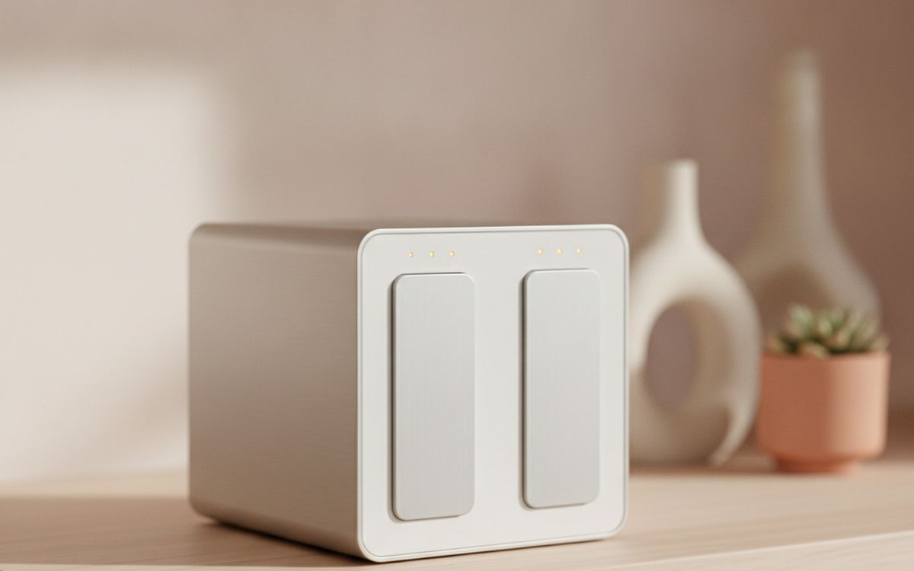
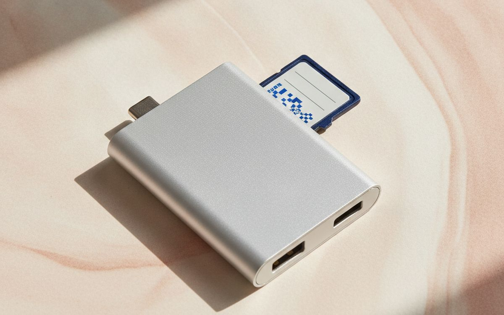
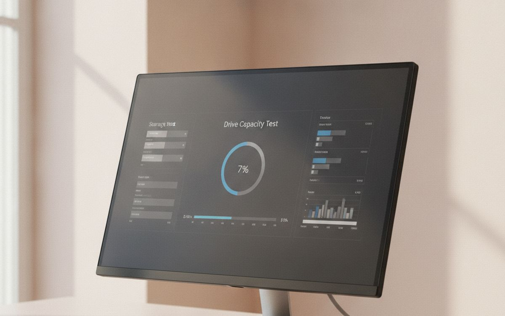
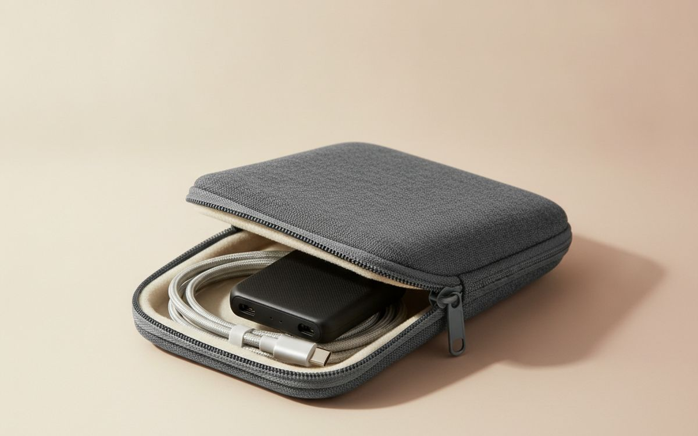
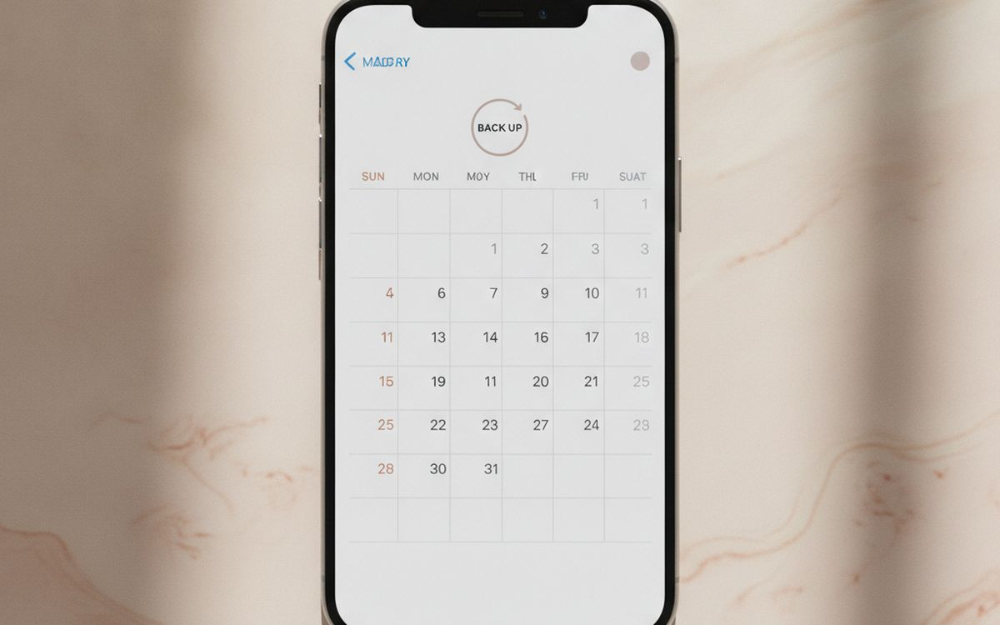

Nobody thinks about backups until the day a laptop will not start or a phone goes into a lake. Then the question is simple: are the photos of the kids somewhere else? For most households the honest answer is "some of them, probably, in a cloud account nobody remembers the password to".
The fix is a rule older than most of the gadgets: keep three copies, on two different kinds of storage, with one copy somewhere other than your home. This list builds that setup one piece at a time, in the order that matters most. You do not need a server rack. You need one drive, one cloud account, and a reminder.
Prices below are approximate street prices at the time of writing and move around constantly, especially during sale events. Treat them as a rough band for budgeting, not a quote. Always check the live listing before you buy.
En bref
A 1-2TB portable SSD from a known brand
The backup drive to buy first
Transparence. Les liens de cette page sont des liens affiliés. Si vous achetez via l’un d’eux, nous pouvons percevoir une commission sans surcoût pour vous. Cela n’influence ni le contenu de cette liste ni son ordre.
Comment nous avons choisi
These picks come from published drive testing, data-recovery company failure reports and long-run owner experience, cross-checked against current retail listings. We have not personally tested every item here. Storage is a category full of fake-capacity listings, so we have been strict about brands and about how to check what arrives.
En un coup d’œil
Les prix sont indicatifs au moment de la rédaction et changent souvent.
Notre sélection

01 · The backup drive to buy firstA 1-2TB portable SSD from a known brand
A portable SSD is small, fast and has no moving parts, so it survives the knocks that kill spinning hard drives. Backing up a full photo library to one takes minutes rather than an evening, which means you will actually do it. Stick to known brands like Samsung, SanDisk, Crucial or WD, and buy from an official store. A 1TB drive covers most laptops; go to 2TB if you shoot a lot of video. Plug it in, let the backup run, and store it away from the computer. The case for it: fast enough that backups actually happen, survives drops and travel, and small enough to keep in a drawer. The trade-off is real: costs more per terabyte than a hard drive and fake "2TB for $20" listings are common on marketplaces, so weigh that against how often it would actually get used.
$70-150Le compromis: Costs more per terabyte than a hard drive
Pourquoi il est là
- Fast enough that backups actually happen
- Survives drops and travel
- Small enough to keep in a drawer
Bon à savoir
- Costs more per terabyte than a hard drive
- Fake "2TB for $20" listings are common on marketplaces

02 · The off-site copyA cloud backup or photo storage plan
A drive in the same house as your laptop does not help in a fire, flood or burglary. A cloud copy does. For photos, iCloud, Google Photos or OneDrive plans are cheap and work automatically from your phone. For whole computers, a dedicated backup service copies everything in the background. Pick the one that matches the phones and computers your family already uses, and check how much the family plan covers. Cheap annual plans often beat monthly ones. The case for it: protects against fire, flood and theft, automatic from phones, and access your photos from anywhere. The trade-off is real: an ongoing cost, and first upload is slow and sync is not the same as backup; deletions can sync too, so weigh that against how often it would actually get used.
$2-10 per monthLe compromis: An ongoing cost, and first upload is slow
Pourquoi il est là
- Protects against fire, flood and theft
- Automatic from phones
- Access your photos from anywhere
Bon à savoir
- An ongoing cost, and first upload is slow
- Sync is not the same as backup; deletions can sync too

03 · Making it automaticBuilt-in backup software, switched on
Macs have Time Machine and Windows has File History. Both are free, both run quietly in the background once you point them at a drive, and both keep older versions of files so you can recover last Tuesday's document. Most people who own a backup drive never turn these on. Ten minutes of setup turns a drive in a drawer into a system that actually runs. If the drive stays plugged in at a desk, backups happen every hour without you thinking. The case for it: free and already on your computer, keeps older versions of files, and runs without any effort once set up. The trade-off is real: only works when the drive is connected and restoring takes some reading the first time, so weigh that against how often it would actually get used.
Free ($0)Le compromis: Only works when the drive is connected
Pourquoi il est là
- Free and already on your computer
- Keeps older versions of files
- Runs without any effort once set up
Bon à savoir
- Only works when the drive is connected
- Restoring takes some reading the first time
04 · Big photo and video archivesA large external hard drive
For a lifetime of photos and home videos, spinning hard drives are still the cheapest storage per terabyte by a wide margin. A 4-8TB desktop drive holds an archive that would cost a lot as SSD. They are slower and more fragile, so treat them as a second copy that sits still on a shelf rather than something you carry. Known brands again: WD, Seagate or Toshiba from an official store. The case for it: lowest cost per terabyte, holds years of photos and video, and good second copy alongside an SSD. The trade-off is real: fragile if dropped while running and needs mains power for most desktop models, so weigh that against how often it would actually get used.
$70-130Le compromis: Fragile if dropped while running
Pourquoi il est là
- Lowest cost per terabyte
- Holds years of photos and video
- Good second copy alongside an SSD
Bon à savoir
- Fragile if dropped while running
- Needs mains power for most desktop models

05 · Families with several computersA two-bay NAS
A network storage box sits on your home network and backs up every computer in the house, streams your media, and can copy itself to the cloud. With two drives mirrored, one can fail without losing anything. Synology and QNAP are the usual names. This is the right answer for a family with three laptops and a photographer in the house, but it is the wrong answer for someone who wants to set it and forget it. It needs a little care and occasional updates. The case for it: backs up every computer at once, mirrored drives survive one failure, and can push its own copy to the cloud. The trade-off is real: needs some setup and maintenance and drives are a separate cost, so weigh that against how often it would actually get used.
$200-400 plus drivesLe compromis: Needs some setup and maintenance
Pourquoi il est là
- Backs up every computer at once
- Mirrored drives survive one failure
- Can push its own copy to the cloud
Bon à savoir
- Needs some setup and maintenance
- Drives are a separate cost

06 · Photographers and drone ownersA fast USB-C card reader
Camera and drone footage often lives only on the memory card until it gets reused. A fast card reader makes offloading painless, which means you do it the same day instead of next month. Look for UHS-II support if your camera uses those cards, and USB-C so it works with modern laptops and tablets. Built-in laptop readers are often slow or missing entirely. The case for it: offload the same day, not next month, works with laptops and tablets, and much faster than most built-in readers. The trade-off is real: cheap readers are much slower than they claim and check it supports your card type, so weigh that against how often it would actually get used.
$15-30Le compromis: Cheap readers are much slower than they claim
Pourquoi il est là
- Offload the same day, not next month
- Works with laptops and tablets
- Much faster than most built-in readers
Bon à savoir
- Cheap readers are much slower than they claim
- Check it supports your card type

07 · Catching fake-capacity drivesA drive capacity checking tool
Marketplaces are full of "2TB" flash drives and SSDs that are really 32GB chips programmed to lie. They seem to work, then silently lose everything past the real capacity. Free tools like H2testw on Windows or F3 on Mac and Linux write test data across the whole drive and check it reads back. Run one on any new storage before trusting it with real files. If a price looks impossibly low for the capacity, it is fake. The case for it: catches fake-capacity drives before they eat data, free, and simple to run. The trade-off is real: a full test takes hours on big drives and wipes the drive, so run it before adding files, so weigh that against how often it would actually get used.
Free ($0)Le compromis: A full test takes hours on big drives
Pourquoi il est là
- Catches fake-capacity drives before they eat data
- Free
- Simple to run
Bon à savoir
- A full test takes hours on big drives
- Wipes the drive, so run it before adding files

08 · Drives that travelA padded drive case
If your backup drive goes on trips, keep it in a small hard-shell case with its cable. It prevents the bent connector and cracked casing that end most portable drives, and it stops the cable going missing. Choose one with a mesh pocket for a second cable or card reader. It is a small thing, but it keeps the backup kit together. The case for it: protects the connector and casing, keeps the cable with the drive, and cheap. The trade-off is real: must match your drive's size and adds a little bulk to a bag, so weigh that against how often it would actually get used.
$8-15Le compromis: Must match your drive's size
Pourquoi il est là
- Protects the connector and casing
- Keeps the cable with the drive
- Cheap
Bon à savoir
- Must match your drive's size
- Adds a little bulk to a bag
09 · Not losing the cloud account itselfA password manager
A cloud backup is only useful if you can log in when your phone is gone. People lose access to years of photos because the password and two-factor codes lived on the device that broke. A password manager stores logins safely and lets a trusted family member get in if something happens to you. Bitwarden has a solid free plan; 1Password is the easier paid option. Save your recovery codes in it too. The case for it: keeps cloud access safe if a phone is lost, family sharing for emergencies, and stores recovery codes. The trade-off is real: one more account to secure well and takes an evening to move old passwords in, so weigh that against how often it would actually get used.
Free-$40 per yearLe compromis: One more account to secure well
Pourquoi il est là
- Keeps cloud access safe if a phone is lost
- Family sharing for emergencies
- Stores recovery codes
Bon à savoir
- One more account to secure well
- Takes an evening to move old passwords in

10 · The part everyone skipsA calendar reminder
Every backup plan fails the same way: it works for two months and then nobody plugs in the drive. A repeating first-of-the-month reminder to plug in the drive and check the cloud is still syncing costs nothing and is the difference between a backup and a drive full of files from last year. Once a year, try restoring one file to prove it works. The case for it: keeps the whole system honest, takes five minutes a month, and catches silent sync failures. The trade-off is real: only works if you actually do it and test a restore at least once a year, so weigh that against how often it would actually get used.
Free ($0)Le compromis: Only works if you actually do it
Pourquoi il est là
- Keeps the whole system honest
- Takes five minutes a month
- Catches silent sync failures
Bon à savoir
- Only works if you actually do it
- Test a restore at least once a year
Questions fréquentes
Is iCloud or Google Photos enough on its own?
It is a good off-site copy, but sync can spread deletions and account lockouts do happen. Keep a drive copy as well.
SSD or hard drive for backups?
SSD for a drive you carry or use often; hard drive for a big archive that sits on a shelf. Many people use one of each.
How do I spot a fake drive?
Price is the tell. A 2TB SSD for $25 is not real. Buy known brands from official stores and run a capacity test on arrival.
How often should I back up?
Phones should back up to the cloud continuously. Computers should run automatic backups, with a monthly check that they are still working.
Les offres du jour
Voyez ce qui est en promotion en ce moment.
Offres →← Tous les guides
En tant que affilié AliExpress, nous percevons une commission sur les achats éligibles. Les prix et la disponibilité sont exacts à la date de publication et peuvent changer.